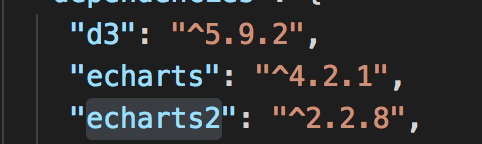
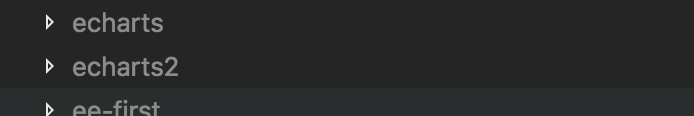

emmmmm.....标题我就觉得起的很变态。闲话不多说，先说出现的背景吧～～。
因为业务上的需求，跟一个硬件对接，要做大屏展示大厅客流热力图分布（背景图是客户那边给的）。然后这个机子传过来的数据就可能20来条。如果用最新的echarts4来做，但是数据太小不足以画出图来，但是如果数据太大传输也是一个问题。后来看来echarts2的热力图，仿佛找到来救星～～（https://echarts.baidu.com/echarts2/doc/example/heatmap.html）里面还有个valueScale，如果数据不好看还能放大，完美！撸起袖子就是干，但是我们大屏上已经有echart4.x 的依赖，如果通过 npm i 或者 yarn add 会直接把echarts4.x 覆盖，所以只能通过手动添加echarts2.2.8 ，

添加好后 再 install 一下就好了。

然后再页面里面正常使用可以了！（虽然方法有点粗暴～啊哈哈哈，mark一下）
useEffect(() => {
require([
'echarts2', 'echarts2/chart/heatmap' // 使用柱状图就加载bar模块，按需加载
], function (e) {
e
.init(dom)
.setOption(option)
})
})